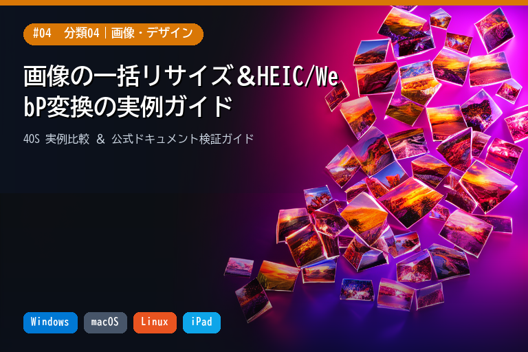

全 36 件の記事を表示中（最終更新: 2026-11-23 16:43 JST）

分類02: コミュニケーション・情報共有
Web会議（Zoom/Teams/Meet）でマイク・カメラが使えない時の解決実例｜Windows・macOS・iOS・Android

分類01: 文書作成・オフィス業務・事務作業
写真・スクショから文字をコピー（OCR文字認識）する標準機能の実例｜Windows・macOS・iOS・Android

分類17: 生活・行政手続き・家計・資産管理
カレンダー予定の家族共有・全端末同期と通知が来ない時の対処実例｜Windows・macOS・iOS・Android

分類16: 学習・教育・自己啓発
Web翻訳・カメラ翻訳・音声翻訳の使い分けとオフライン翻訳の実例｜Windows・macOS・iOS・Android
分類15: エンターテインメント・趣味
動画・音楽のオフライン保存とダウンロードできない・容量圧迫の対策実例｜Windows・macOS・iOS・Android

分類14: ハードウェア・周辺機器・IoT連携
外部モニター・サブディスプレイ接続の設定と映らない・解像度ズレ対処｜Windows・macOS・iOS・Android

分類13: ファイル管理・バックアップ・データ復旧
ZIPファイルの圧縮・解凍と文字化け・開けない時の解決実例｜Windows・macOS・iOS・Android
分類12: セキュリティ・プライバシー対策
PC・スマホ紛失時の遠隔ロック・位置検索（探す機能）の設定実例｜Windows・macOS・iOS・Android

分類11: ネットワーク・サーバー・インフラ構築
Wi-Fiが遅い・突然切れる原因の切り分けと改善チェック実例｜Windows・macOS・iOS・Android

分類10: システム管理・OS設定・メンテナンス
OSアップデートが終わらない・失敗するときの安全な対処手順｜Windows・macOS・iOS・Android の比較ガイド
分類09: データ分析・科学計算・AI活用
生成AI（ChatGPT/Gemini）をPCとスマホで連携・履歴活用する実例｜Windows・macOS・iOS・Android

分類08: Web制作・ブログ・デジタルマーケティング
QRコード作成・読み取りとPC〜スマホ間のURL即時共有実例｜Windows・macOS・iOS・Android

分類07: プログラミング・ソフトウェア開発
初心者向けMarkdownメモの書き方と全端末同期・プレビュー実例｜Windows・macOS・iOS・Android

分類06: 3D・CAD・ものづくり
スマホの計測・3Dスキャンで家具サイズや間取りを確認・共有する実例｜Windows・macOS・iOS・Android
分類05: 動画・音声・音楽制作
ボイスメモ・会議録音の文字起こしと音声ファイル共有の実例｜Windows・macOS・iOS・Android

分類04: 画像・イラスト・デザイン制作
Instagram 投稿ワークフロー：PC デザインからスマホ投稿まで｜Windows・macOS・iOS・Android

分類03: 情報収集・リサーチ・Web 利用
クロスデバイス検索：ブラウザ間でのブックマークとメモ共有｜Windows・macOS・iOS・Android

分類02: コミュニケーション・情報共有
PC での PDF 注釈とスマホからの即時返答｜Windows・macOS・iOS・Android

分類01: 文書作成・オフィス業務・事務作業
複数 OS で同時編集：Google ドキュメント vs ローカルファイル｜Windows・macOS・iOS・Android

分類17: 生活・行政手続き・家計・資産管理
領収書スキャン・確定申告データの整理と安全な保存手順｜Windows・macOS・iOS・Android

分類16: 学習・教育・自己啓発
デジタル学習ノート・暗記カードの全端末同期とトラブル対策｜Windows・macOS・iOS・Android

分類15: エンターテインメント・趣味
画面ミラーリング・テレビ投影の実例と映らない・音ズレ対処｜Windows・macOS・iOS・Android

分類14: ハードウェア・周辺機器・IoT連携
Bluetooth機器のマルチペアリング設定と繋がらない時の解決法｜Windows・macOS・iOS・Android

分類13: ファイル管理・バックアップ・データ復旧
外付けSSDを4OSで共用するバックアップ手順と認識しない時の対処｜Windows・macOS・iOS・Android

分類12: セキュリティ・プライバシー対策
パスキー・パスワード管理＆2段階認証の安全な同期実例｜Windows・macOS・iOS・Android

分類11: ネットワーク・サーバー・インフラ構築
自宅LANの共有フォルダ・NAS（SMB）接続とエラー解決の実例｜Windows・macOS・iOS・Android

分類10: システム管理・OS設定・メンテナンス
ストレージ容量不足の原因特定と安全な空き容量確保の実例｜Windows・macOS・iOS・Android
分類09: データ分析・科学計算・AI活用
CSV文字化け（UTF-8/Shift_JIS）の確実な直し方と実例｜Windows・macOS・iOS・Android

分類08: Web制作・ブログ・デジタルマーケティング
Webサイトの表示確認・スーパーリロード＆キャッシュ削除の実例｜Windows・macOS・iOS・Android

分類07: プログラミング・ソフトウェア開発
初心者向けGitHub・コード閲覧とブラウザ開発環境の実例｜Windows・macOS・iOS・Android

分類06: 3D・CAD・ものづくり
3Dデータ（STL/OBJ/AR）の閲覧・確認の実例ガイド｜Windows・macOS・iOS・Android
分類05: 動画・音声・音楽制作
動画の圧縮・トリミング・MP4共有の実例と再生エラー対処｜Windows・macOS・iOS・Android

分類04: 画像・イラスト・デザイン制作
画像の一括リサイズ＆HEIC/WebP変換の実例ガイド｜Windows・macOS・iOS・Android

分類03: 情報収集・リサーチ・Web利用
スクリーンショット・画面録画の最短手順と保存先トラブル対処｜Windows・macOS・iOS・Android

分類02: コミュニケーション・情報共有
クラウドストレージ同期と共有トラブル解決の実例｜Windows・macOS・iOS・Android
分類01: 文書作成・オフィス業務・事務作業
PDFの結合・分割・圧縮を無料で行う実例ガイド｜Windows・macOS・iOS・Android
条件に一致する記事が見つかりませんでした。キーワードやジャンルを変更してお試しください。